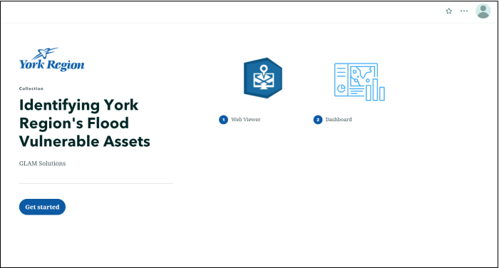

ArcGIS StoryMaps
A StoryMap Collection is used as the container for the two web products that were created in this project. This allows the user to stay on one page to view two different applications.
Application Design
The Collection keeps the light colour theme of both the Web Viewer and Dashboard products and makes use of a prominent shade of blue from York Region's logo as the accent colour for consistency.

View StoryMap
Development Process
Configuration of the StoryMap Collection was very simple. In a new Collection template, the two applications were added as ArcGIS Content with appropriate thumbnails and titles. The default “Grid” layout option was kept and the Navigation style was set to the tabbed option so the application titles would be displayed in the final collection.